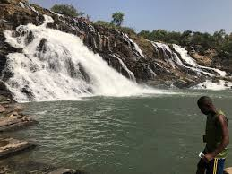
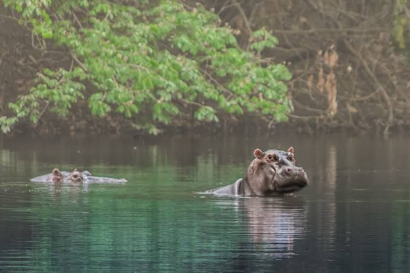
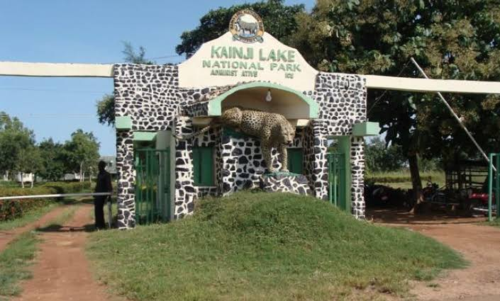

Introduction
Niger State, located in the central region of Nigeria, is one of the largest states in the country by land area. Known for its diverse landscapes, rich cultural heritage, and historical significance, Niger State is a destination that offers a unique blend of natural beauty and cultural experiences. The state capital is Minna, which serves as the administrative and economic hub of the region.
Geography and Climate
Niger State is bordered by Kaduna, Katsina, Zamfara, Sokoto, Kebbi, and Kwara States. The state's geography includes a mix of savannah, forests, and river valleys, with the Niger River flowing through its southern part. The climate is tropical, with a rainy season from April to October and a dry season from November to March. Temperatures in Niger State can range from 22°C to 40°C, depending on the season.
Culture and People
Niger State is home to a diverse population with various ethnic groups, including the Gwari (Gbagyi), Hausa, Fulani, and Nupe. The cultural heritage of the state is reflected in its traditional festivals, arts, and crafts. The Gwari people, for example, are known for their vibrant traditional ceremonies and intricate beadwork. The state also hosts the Nupe Festival, which celebrates the traditions and history of the Nupe people with music, dance, and feasting.
Economic Activities
The economy of Niger State is primarily based on agriculture, with major crops including maize, millet, sorghum, and groundnuts. The state's fertile soil and favorable climate make it ideal for farming. Niger State is also known for its mineral resources, including limestone, gypsum, and coal. The state government is working to harness these resources for economic development, while also promoting tourism and small-scale industries.
Tourist Attractions
Niger State offers a range of tourist attractions that highlight its natural beauty and cultural richness. The Kainji Lake National Park, located in the southern part of the state, is a popular destination for wildlife enthusiasts and nature lovers. The park is home to a variety of animal species, including elephants, lions, and antelopes, and offers opportunities for boating and fishing. Other notable attractions include the Gurara Falls, a spectacular waterfall near the town of Gurara, and the historic Bida Emirate, known for its traditional architecture and cultural heritage.
Education and Innovation
Niger State is home to several educational institutions, including the Federal University of Technology, Minna, and the Niger State Polytechnic. These institutions contribute to the state's educational development and research capabilities. The state government is also focused on improving access to education at all levels, with initiatives aimed at enhancing the quality of primary and secondary education.
Gurara Falls
Gurara Falls, located in Niger State, is one of Nigeria’s most spectacular natural attractions. This magnificent waterfall cascades down from a height of about 30 meters, creating a stunning sight as it plunges into the Gurara River. The falls are named after two deities, Gura and Rara, who are believed to have guarded the waterfall according to local legends. Gurara Falls is a popular destination for picnicking, swimming, and photography, especially during the rainy season when the waterfall is at its most powerful. The lush surroundings, combined with the roaring sound of the falls, offer visitors a tranquil and refreshing experience in nature.
Kainji Lake National Park
 Kainji Lake National Park, located in Niger State, is Nigeria’s premier national park, established in 1978. It is home to a vast range of wildlife, including elephants, lions, leopards, baboons, and various species of birds. The park is divided into two main sections: the Borgu Game Reserve and the Zugurma Game Reserve, both offering excellent opportunities for wildlife viewing and birdwatching. Kainji Lake, the man-made lake that gives the park its name, is another major attraction, providing opportunities for boating and fishing. With its diverse ecosystems and scenic landscapes, Kainji Lake National Park is a haven for nature lovers and an essential destination for eco-tourism in Nigeria.
Conclusion
Niger State is a region of great potential, offering a blend of natural beauty, cultural diversity, and economic opportunities. Whether you're interested in exploring its landscapes, experiencing its rich cultural heritage, or engaging in business ventures, Niger State provides a wealth of experiences for visitors and residents alike.